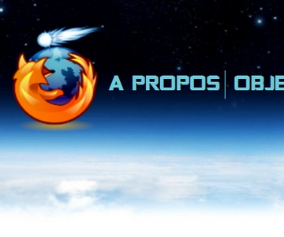
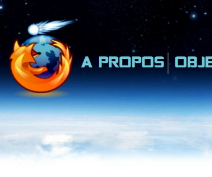

Jelix Komodo
Projet FireTrans
Projet Oplay
Projet WoMoz
Projet RecallTB
Projet MulticallLN
Projet Timesheets++
Projet Timesheets Editor
Projet WebTeach
Projet Site CoMETE
Reservation Ressources Lightning
Projets Nightingale
 

Project Description
Jelix est un framework PHP développé par Laurent Jouanneau.
KomodoEdit un éditeur libre utilisant les technologies Mozilla.
Le projet consiste à construire une extension à KomodoEdit pour traiter certains fichiers XML ou .ini de Jelix.
Interfaces en XUL
Développement d'une extension de Firefox destinée à aider les traducteurs de fichier .dtd et .properties à travailler en local.
Interface d'aide en XUL pour les traducteurs de Firefox et Thunderbird.
Oplay est une plateforme de jeu Web sur laquelle on peut jouer en utilisant son téléphone mobile comme manette de jeu.
Le but du projet est l'enrichissement en fonctionnalité et capacité technique de la manette de jeu en utilisant les technologie Mozilla.
Sujet : Rassembler de nouvelles données concernant les femmes dans l'informatique et l'Open Source, en vue de s'en servir pour les études et les présentations WoMoz. L'étude devra être faite au niveau Européen.
Il faudra analyser les résultats obtenus et les présenter sur un site Web utilisant les
technologies HTML5 (svg, canvas, ...)
Construire une extension pour permettre le rappel d'une réponse dans Thunderbird.
Sens direct : marquer un message comme "à répondre d'ici ... jours" – et qui rappelle à l'utilisateur de répondre si ce n'est pas déjà fait.
Sens indirect : marquer un message comme "j'attends une réponse d'ici ... jours" et qui rappelle à l'utilisateur de pinger son correspondant s'il n'y a pas de réponse d'ici-là.
Etendre/patcher Lightning pour :
Avoir la possibilité de mettre plusieurs rappels pour un événement (ex. 1 jour avant, puis 15 minutes avant)
- Que les rappels d'événements puissent déclencher une musique (customisable)
- Que les rappels d'événements puissent envoyer un mail
- Que les rappels d'événements puissent ouvrir un fichier arbitraire
- Que les rappels d'événements puissent lancer un script.
La libraire libtimesheet.js ( et librairies associées) assure l'implémentation en Javascript de SMIL Timesheets
A l'usage certains "bugs" sont apparus montrant
- Une insuffisante prise en compte de situations complexes
- Des manques danhs la spécification de SMIL Timesheets
Le but du projet est de
- Corriger la ou les librairies concernées pour prendre en compte des situations complexes
- Faire des propositions pour amender la spécification de SMIL Timesheets
- Ces propositions pourront être soumises au GT SYMM du W3C
Fabien Cazenave a commencé la construction d'un éditeur WYSIWYG de timesheets.
Le but du projet est de reprendre ce prototype pour en faire un produit utilisable.
Le but de projet est de construire un système permettant de diffuser des slides sur un réseau local.
Le système s'appuiera sur les Websockets, il consiste à construire :
-Une interface de gestion des connexions sous forme de page web/XUL
-Une connexion persistente entre un Firefox maître et des Firefox esclaves
-Un protocole permettant d'obliger les Firefox esclaves d'afficher le contenu de la page du Firefox maitre
Le but du projet est de construire le site institutionnel du projet CoMETE, en n'utilisant que des logiciels libres, les technologies "Web Apps" et en structurant le site comme une vitrine du projet.
Le but du projet est de créer une extension à Lightning permettant d'associer à une date précise un événement dont on peut préciser
la localisation sous forme d'un lieu déjà enregistré ou de coordonnées GPS, la nature et les ressources nécessaires.
Tout ceci doit être configurable par l'uilisateur. Les informations sont stockées dans un fichier JSON.
Nightingale est la version OpenSource du player multimédia SongBird, tous les deux sont construits avec les technologies Mozilla.
Projets proposés :
1. Nightingale possède un égaliseur simple (equalizer), cependant il faudrait qu'il soit
plus complet. Choix de présélections, enregistrement de présélections personnalisées. Une extension qui permet de choisir des présélections de base a déjà été réalisée, mais il faudrait que ce soit intégré au coeur du logiciel, et qu'on puisse enregistrer ses propres présélections.
2. Prise en charge des podcasts (enregistrements, écoutes, listes) (documents de design déjà disponible).
3. Extraction de pistes audio de CD (sous forme d'extension) (les étudiants peuvent se baser sur le travail déjà fait par Songbird).
4. Synchronisation de morceaux en Bluetooth.
5. Écriture des méta-données d'un morceau à partir de son empreinte en utilisant des services comme Musicbrainz (les étudiants peuvent se baser sur des extensions utilisant déjà MusicBrainz)
6. Spécifier le début et la fin d'un morceau lors de la lecture
7. Trouver un moyen de partager sur Twitter, Facebook, Google + etc. ce que l'on écoute (les étudiants peuvent se baser sur l'extension qui couvre Twitter, Identi.ca.
8. Réaliser l'intégration avec Google Music/Spotify/Grooveshark.
Contact
Laurent Jouanneau
email : ljouanneau@gmail.com
irc : laurentj sur #comet #frenchmoz #xulfr
Jean Bernard Marcon & Sonny Piers
email : jeen-bernard.marcon@laposte.net et sonny.piers@gmail.com
irc : Goofy et sonny sur #comet #frenchmoz #babelzilla
Alain Duval Directeur Technique d'Objectif Informatique
email : aduval@objectif-informatique.fr
Delphine Lébédel
email : dlebedel@mozilla.com
irc : delphine sur #comete #frenchmoz
David Rajchenbach-Teller
email : dteller@mozilla.com
irc : Yoric sur #comete #frenchmoz
David Rajchenbach-Teller
email : dteller@mozilla.com
irc : Yoric sur #comete #frenchmoz
Fabien Cazenave & Didier COURTAUD
email : fabien@cazenave.cc & didier.courtaud@univ-evry.fr
irc : kaze et Desiderius sur #comete #frenchmoz
Fabien Cazenave
email : fabien@cazenave.cc
irc : kaze sur #comete #frenchmoz
Didier COURTAUD
email : didier.courtaud@univ-evry.fr
irc : Desiderius sur #comete #frenchmoz
Didier COURTAUD
email : didier.courtaud@univ-evry.fr
irc : Desiderius sur #comete #frenchmoz
Didier COURTAUD
email : didier.courtaud@univ-evry.fr
irc : Desiderius sur #comete #frenchmoz
Antoine Turmel
email : antoineturmel@gmail.com
irc : GeekShadow sur #comete #frenchmoz